현업 실행 제품면
업무 요구를 앱·에이전트·워크플로우·업무키트로 만들고 운영합니다.
- 앱 제작·운영
- 에이전트 추천·생성·조율
- 업무키트·프로젝트 통제
PRODUCT & FUNCTION GUIDE
LAXS-M의 제품 구조와 실제 화면을 기준으로 경영 홈, AI 경영비서, 앱·에이전트 생성, 업무키트, 데이터·온톨로지, 전사 시뮬레이션, 의사결정과 보고 기능을 설명합니다.
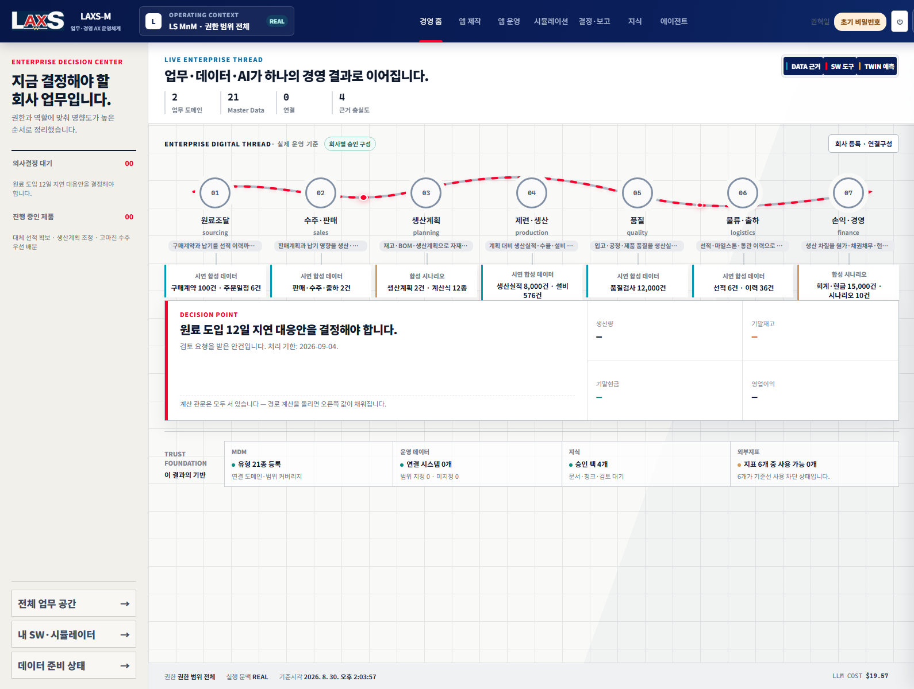
CONTENTS목차
01. PRODUCT ARCHITECTURE제품 구조와 공통 신뢰 기반
업무 요구를 앱·에이전트·워크플로우·업무키트로 만들고 운영합니다.
회사·조직·데이터·지식·대외지표와 업무 영향 관계를 연결합니다.
실적·계획·예측·시나리오를 비교하고 결정·실행·효과로 연결합니다.
회사·조직 권한, 데이터 판과 지문, 확정 산식, 감사·보안·비용·발간 통제가 모든 기능에 공통 적용됩니다.
02. ENTERPRISE BUSINESS FUNCTION MAP전사 업무 기능 맵
원료매입·물류·생산·품질·판매·재무를 시작으로 자금·투자·자산·인사·조직 등 경영활동 전반에 같은 구조를 적용합니다.
03. OPERATIONAL CAPABILITY MAP현업 실행 기능
| 기능 영역 | 주요 기능 | 사용자 입력 | 주요 결과 | 통제 기준 |
|---|---|---|---|---|
| 경영 홈 | 업무 연결도, 의사결정 대기, 운영 문맥, 보조정보 | 회사·조직·업무 범위 선택 | 전사 현황과 다음 행동 | 사용자·조직 범위 |
| AI 경영비서 | 질문, 근거 탐색, 설명, 업무 전환 | 자연어 질문·목적 | 근거가 연결된 답변·제안 | 권한·출처·모델 정책 |
| 앱 제작 | 요구 정제, WBS, 설계·생성·검토·릴리스 | 업무 목적·규칙·필요 데이터 | 회사 문맥을 상속한 업무 앱 | 품질 게이트·계약·릴리스 |
| 앱 운영 | 실행 현황, 사용자·데이터·버전 관리 | 운영 설정·업무 입력 | 업무 결과·운영 이력 | 상태·권한·감사 |
| 에이전트 | 추천·자동 생성, 역할 구성, 워크플로우 조율 | 수행할 업무·목표·제약 | 에이전트 세트와 실행 흐름 | 도구·모델·비용·검토 |
| 업무키트 | 데이터 입력, 규칙, 관리 화면, 시뮬레이션 결속 | 업무영역별 실제 데이터 | 재사용 가능한 업무 실행 자산 | 데이터 계약·품질·소유권 |
04. EVIDENCE & DECISION CAPABILITY MAP데이터·지식·판단 기능
| 기능 영역 | 주요 기능 | 사용자 입력 | 주요 결과 | 통제 기준 |
|---|---|---|---|---|
| 기준정보·데이터 | MDM, 카탈로그, 소스 결속, 준비도·품질 | 원천·필드·단위·소유권 | 인증된 데이터 판과 상태 | 출처·품질·유효기간 |
| 지식·RAG | 지식팩, 문서·근거 연결, 검색·설명 | 업무 문서·정책·분류 | 업무 문맥별 지식 근거 | 보안등급·출처·버전 |
| 대외 인텔리전스 | 대상회사·사업 기반 수집 봇, 지표 확정 | 회사·산업·수집 주제 | 환율·금리·원자재·시장 근거 | 출처·수집시점·사용 범위 |
| 업무 온톨로지 | 관계·영향 경로·근거 그래프 | 객체·관계·유효기간·근거 | 업무 상관 그래프와 경로 | 조직 범위·관계 상태·버전 |
| 시뮬레이션 | 기준선·가정·결정론적 계산·대안 비교 | 가정·시점·시나리오 | 생산·재고·매출·손익·현금 영향 | 봉인 데이터·산식·결과 지문 |
| 결정·보고 | 안건·회의·실행계획·효과·브리핑·발간 | 대안·책임·기한·공개 범위 | 결정 패키지와 보고서 | 근거 해시·권한·발간 상태 |
05. MANAGEMENT HOME & AI ASSISTANT경영 홈과 AI 경영비서

현재 회사와 권한 범위에 맞는 업무·데이터·의사결정만 표시합니다.
대기 안건·업무 흐름·생산·재고·현금 영향을 같은 화면에서 봅니다.
선택 객체의 근거를 연결해 답하고 안건·시뮬레이션·발간 작업으로 전환합니다.
06. APP CREATION업무 앱 제작
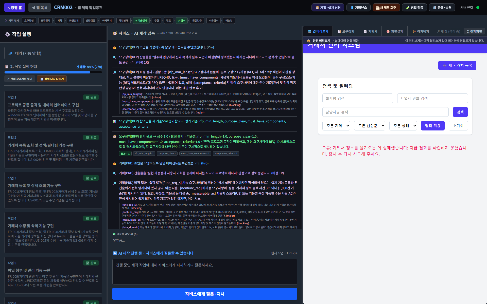
기능·업무규칙·필요 데이터·사용자·제약을 자연어와 구조화 항목으로 정리합니다.
기획·설계·구현·검토 에이전트의 작업과 산출물을 그래프로 추적합니다.
품질 게이트와 사람 확인을 통과한 결과만 회사 문맥·권한·데이터 계약을 상속해 배치합니다.
07. AGENT ORCHESTRATION에이전트 추천·생성·조율
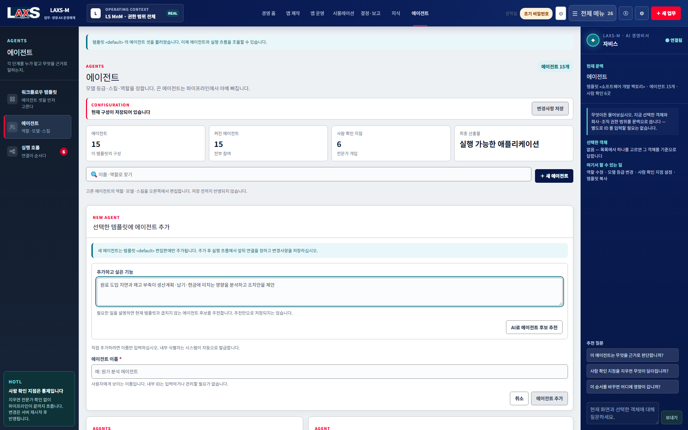
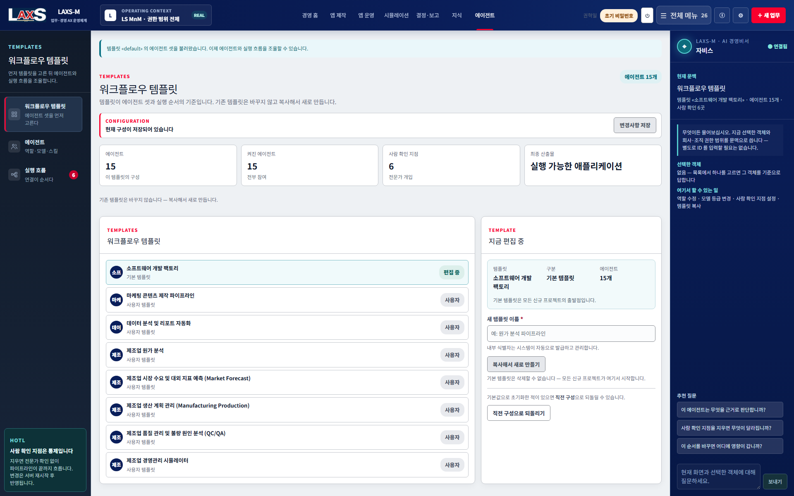
업무 목적·산출물·필요 전문성을 분석해 겹치지 않는 역할 후보를 제안합니다.
사용자는 이름과 역할만 입력하며 내부 ID와 코드는 시스템이 발급합니다.
템플릿 기준으로 역할 순서·병렬 작업·인수인계·재작업 경로를 연결합니다.
승인·대외 발간·고위험 변경 등 사람 판단이 필요한 지점을 분리합니다.
08. WORK KITS & APP OPERATIONS업무키트와 앱 운영

필드·단위·필수값·정합성·소유권 기준을 제공합니다.
사용자 역할·상태 전이·검토·예외 처리 규칙을 관리합니다.
업무 결과가 전사 시나리오의 입력과 기여도로 연결됩니다.
앱 버전·릴리스·사용자·실행 이력과 운영 상태를 추적합니다.
09. DATA & MASTER DATA데이터 준비와 기준정보
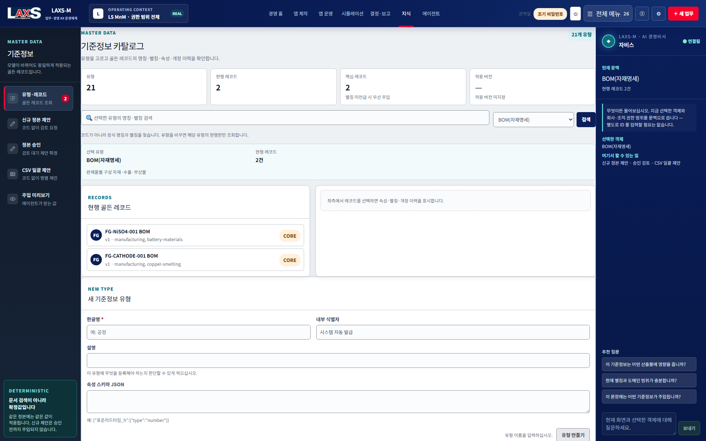
ERP·MES·LPL·파일 등 원천과 업무 객체를 연결합니다.
필수값·형식·낟알·단위·정합성 규칙을 선언합니다.
데이터셋과 조직 범위별 책임 부서를 결속합니다.
기준시점·출처·내용 지문을 봉인해 재현 가능하게 합니다.
10. KNOWLEDGE & RAG지식·RAG

정책·절차·계약·업무 사례를 업무영역별 지식팩으로 구성합니다.
사용자 점수에만 의존하지 않고 객체·이벤트·온톨로지 관계·권한을 기준으로 검색 범위를 구성합니다.
AI 답변이 사용한 문서·데이터·시점·버전을 근거로 보존합니다.
11. ONTOLOGY & EXTERNAL INTELLIGENCE온톨로지·대외 인텔리전스
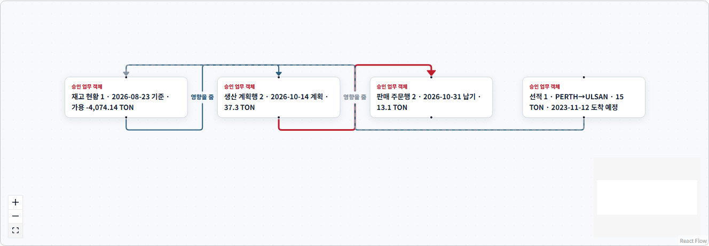
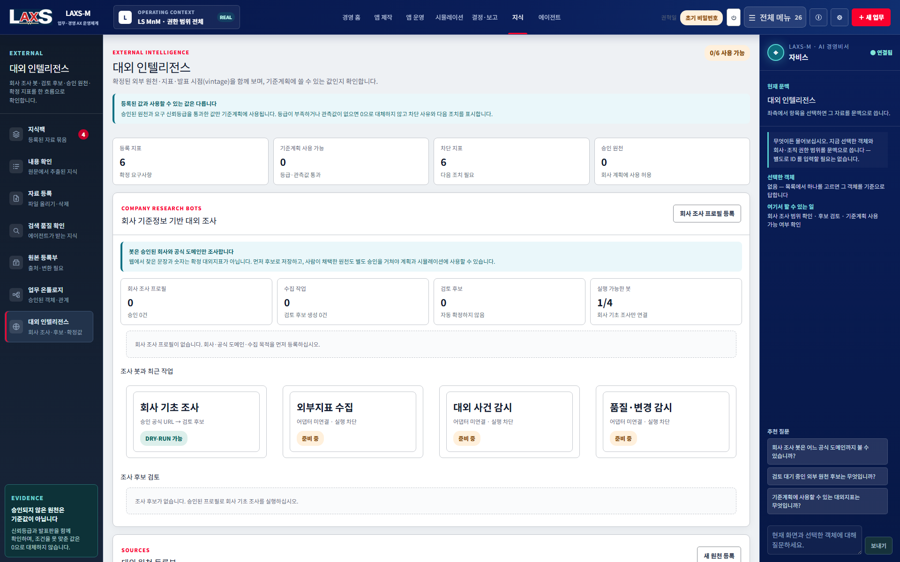
객체·관계·유효기간·근거를 판으로 관리합니다.
구매 지연이 재고·생산·판매로 이어지는 경로를 설명합니다.
등록 회사와 공식 도메인·사업 주제를 기준으로 공개 정보를 수집합니다.
환율·금리·금속가 등은 출처와 관측시점을 검토한 뒤 계산에 사용합니다.
12. ENTERPRISE SIMULATION전사 시뮬레이션

기준시점·인증 데이터 판·산식·가정을 고정하고 기준안과 대안을 분리합니다.
구매 지연·재고 부족·생산 가능량·매출 이연을 확정 모델로 계산합니다.
생산량 12,000→7,200 ton, 영업이익 180.0→103.9억원 등 손익·현금·납기 영향을 함께 봅니다.
13. DECISION & EXECUTION의사결정·실행
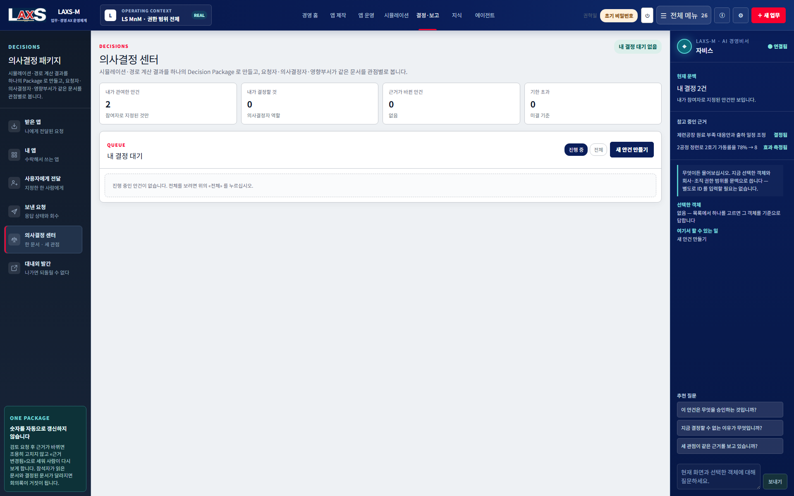
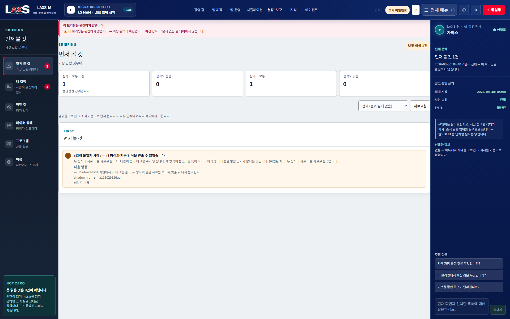
14. REPORTING & PUBLICATION브리핑·보고서 발간
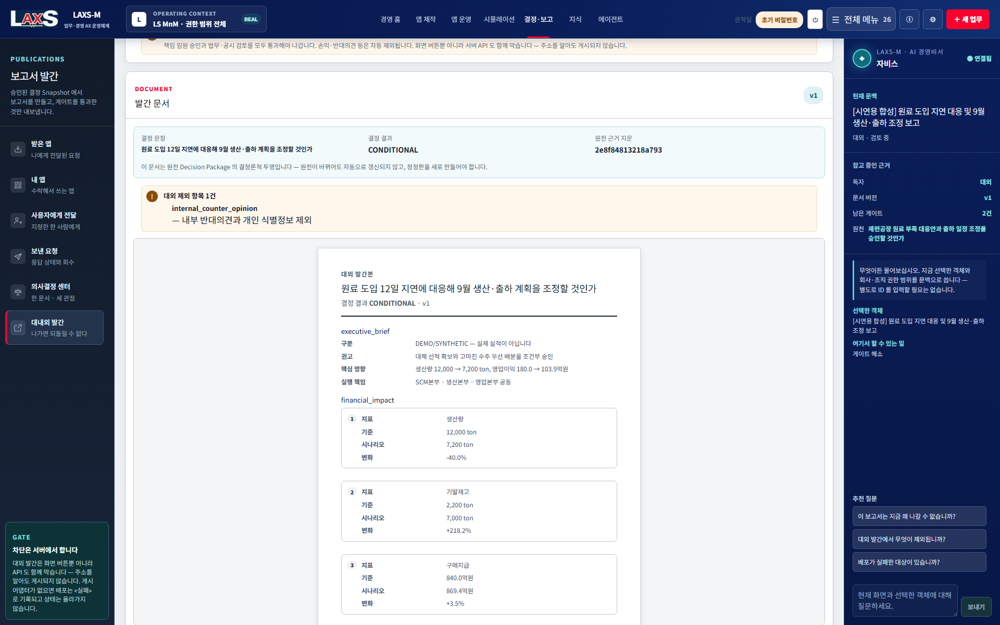
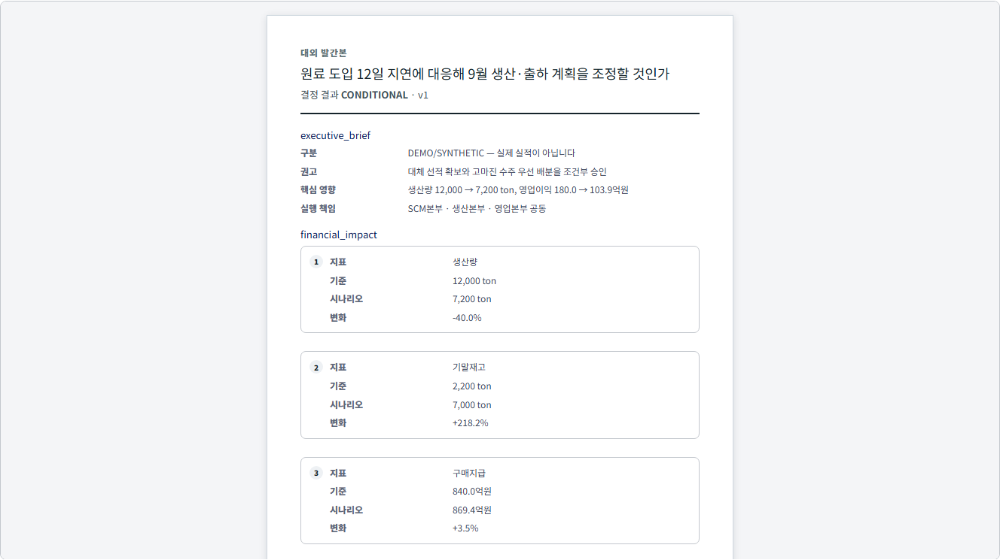
같은 결정 Snapshot에서 같은 문서가 생성됩니다.
내부·대외 범위에 따라 민감정보와 반대의견을 분리합니다.
책임 임원·법무·공시 등 필요한 검토 상태를 관리합니다.
문서 버전과 evidence hash로 원천 결정 근거를 다시 확인합니다.
15. GOVERNANCE & ADMINISTRATION거버넌스·관리

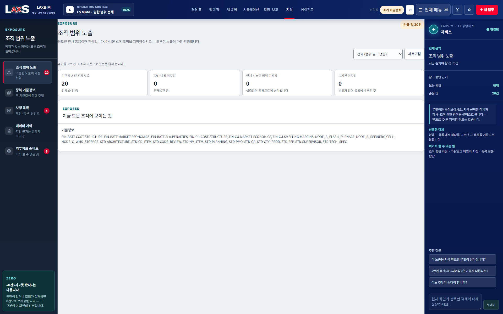
16. CORE USAGE FLOW핵심 사용 흐름
현업이 업무 앱·에이전트·업무키트를 만들고, 전사가 데이터·지식·관계를 연결하며, 경영이 시뮬레이션으로 판단하고 실행 결과를 다시 축적하는 AX 경영 플랫폼입니다.